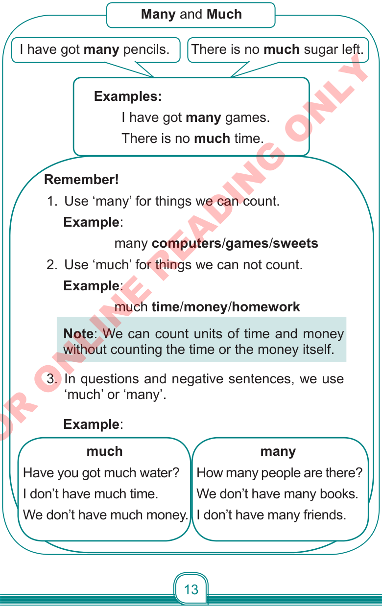

(c) Read the following information.
Many and Much

I have got many pencils.
There is no much sugar left.
Examples:
I have got many games.
There is no much time.
Remember!
1. Use ‘many’ for things we can count.
Example:
many computers/games/sweets
2. Use ‘much’ for things we can not count.
Example:
much time/money/homework
Note:
We can count units of time and money without counting the time or the money itself.
3. In questions and negative sentences, we use ‘much’ or ‘many’.
Example:
much
Have you got much water?
I don’t have much time.
We don’t have much money.
many
How many people are there?
We don’t have many books.
I don’t have many friends.
ENGLISH STD 4 (2024).indd 13
25/11/2024 14:46